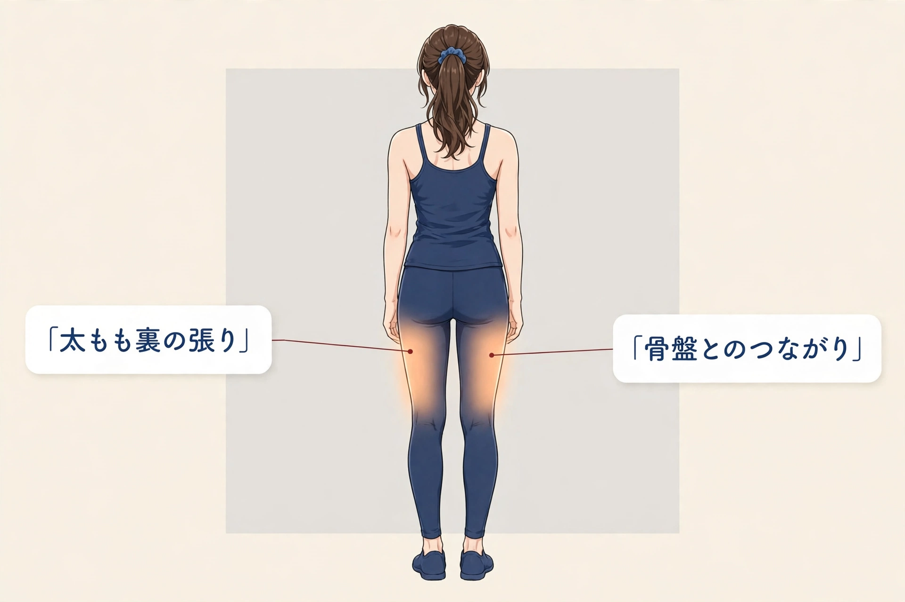

太もも裏の張り
美容整体ステラ・ポラリス東三国｜大阪市淀川区東三国・東三国駅徒歩5分・女性向け

張りつめた太もも裏をゆるめて、しなやかな脚のラインへ
前かがみになると太ももの裏がつっぱる、脚を伸ばして座ると裏側が張って長く座れない——太もも裏の張りは、姿勢や歩き方にも関わるお悩みです。太ももの裏には、骨盤から膝の下までをつなぐ筋肉の集まりがあり、脚を後ろに引く動きや、かがむ動作で大きく伸び縮みします。座る時間が長く、この筋肉が縮んだ姿勢で過ごすことが多いと、張りや硬さが残りやすいと言われています。このページでは、太もも裏が張る背景と、裏側がゆるんで脚がしなやかに動く状態を目指す当サロンでのケア、ご自宅でできるセルフケアをご案内します。まずは下のチェックで、ご自身の状態を確かめてみてください。
ご予約はこちら（Coubic）こんなお悩みありませんか
- 前かがみになると、太ももの裏が強くつっぱる
- 脚を伸ばして座ると、裏側が張って姿勢を保ちにくい
- 歩くとき、太ももの裏に重さや張りを感じる
- 階段を上るとき、裏側が引っ張られる感覚がある
- 開脚や前屈が苦手で、脚の可動域が狭く感じる
- 長時間座ったあと、立ち上がると裏側がこわばる
- 太ももの裏を触ると、筋のように固く張っている
当てはまる項目が多いほど、太もも裏の筋肉の硬さと、骨盤の傾きや座り姿勢の影響が重なっている目安とされています。太もも裏は骨盤とつながっているため、張りが姿勢全体にも関わります。次のセルフチェックで、ご自身の柔らかさの傾向を確かめてみましょう。
簡単セルフチェック（太もも裏の柔らかさチェック）
無理のない範囲で、前屈のしやすさを見る簡単な方法です。
- 立った状態で脚をそろえ、膝を伸ばしたままゆっくり前かがみになります。指先がどこまで届くか、裏側のつっぱり感を確認します。
- 仰向けに寝て片脚を上に上げ、膝をできるだけ伸ばします。上がる角度と、裏側の張り具合を左右で比べます。
- 椅子に座って片脚を前に伸ばし、つま先を手前に向けます。裏側が伸びる感覚が強い側は、硬さが進んでいる目安と言われています。
※これは診断ではありません。ご自身の状態の傾向を知る目安としてお使いください。
太もも裏の張りの原因と仕組み
骨盤から膝へつながる筋肉の集まり
太ももの裏には、骨盤の下の出っ張りから膝の裏の両側へつながる、3つの筋肉の集まりがあります。脚を後ろに引く、膝を曲げるといった動きに加えて、骨盤を後ろから支える役割も担っています。図1のように、この筋肉が硬くなると、骨盤が後ろに引っ張られやすくなり、前屈のつっぱり感だけでなく、座ったときの姿勢にも影響すると言われています。

図1 太もも裏の張りは、骨盤から膝へつながる筋肉の硬さと、座り姿勢の長さが重なって感じられやすくなります。体の状態には個人差があります。
座り姿勢と縮んだままの時間
椅子に座る姿勢では、太もも裏の筋肉は膝が曲がってゆるむ一方で、骨盤側では引っ張られた状態が続きます。長時間同じ姿勢で過ごすと、筋肉がその長さに慣れてしまい、立って伸ばしたときに張りを感じやすくなります。デスクワーク中心の生活では、大きく伸ばす機会そのものが少ないことも、硬さの一因です。
骨盤の傾きと腰への広がり
太もも裏が硬いと、骨盤が後ろに傾きやすくなり、背中が丸まった姿勢につながることがあります。逆に、骨盤の傾きを腰の動きで補おうとすると、腰まわりに負担が集まり、腰の重さを感じることもあります。太もも裏の張りは、脚だけの問題ではなく、姿勢の土台と関わる部分です。
歩き方と脚のラインへの影響
太もも裏が硬いと、歩くときの脚の振り出しが小さくなり、歩幅が狭くなりがちです。代わりに太ももの前側やふくらはぎに負担が寄ると、脚全体の疲れやすさやラインの張りにも関わります。裏側がゆるんで伸び縮みがなめらかになると、脚を大きく使える歩き方に近づき、ラインもすっきり見えやすくなります。
セルフケアで足りる場合・サロンケアが向く場合
ストレッチで裏側が伸びる感覚があり、動かしたあとは軽く感じる場合は、まずご自宅でのセルフケアを続けて様子を見る方法があります。一方で、前屈のつっぱりが強く自分では伸ばしきれない、腰や骨盤の傾きも気になる、張りが数週間変わらないという場合は、サロンでのケアが向いている目安になります。サロンでは、太もも裏だけでなく骨盤まわりも合わせて整え、裏側がゆるんで脚が動かしやすい状態を目指します。今の状態に合わせて選ぶことが大切です。
当サロンでのケア
当サロンの太もも裏ケアは、「裏側のつっぱりがゆるみ、脚がしなやかに動く状態」を目指す組み立てです。まず骨盤の傾きと裏側の張り具合を一緒に確認し、硬さの出ている部位に合わせて3つの手技を組み合わせます。
美容整体：骨盤の傾きと脚のラインを整え、太もも裏が引っ張られにくい土台をつくることを目的に。姿勢の土台から整えることで、前屈や歩行のしやすさも変わりやすくなります。
アロマオイルマッサージ：太ももの裏からふくらはぎ、脚全体をオイルでゆるめ、巡りが流れやすい状態を目指します。脚全体が軽くなるような、リラックス感の高いケアです。
もみほぐし：筋のように張りやすい裏側の中央や、お尻との境目をほぐし、つっぱり感がやわらぎ、脚が伸ばしやすくなる感覚を目指して進めます。
ケアを通して目指すのは、こんな変化です。
- 前屈のつっぱりがやわらぎ、体が前に倒しやすい状態へ
- 太もも裏がゆるみ、脚を伸ばして座りやすい姿勢へ
- 歩幅が広がり、脚の振り出しが軽く感じる歩き方へ
- 骨盤がまっすぐ乗りやすくなり、座り姿勢が安定する感覚へ
- 脚全体の張りが分散し、夕方の脚の重さがやわらぐ状態へ
施術の仕上げには、裏側を伸ばすストレッチのコツと、デスクワークの合間に取り入れやすい動きもお伝えします。太もも裏の柔らかさは日常の使い方で変わっていくため、施術とセルフケアを合わせることが、しなやかな脚を保つ土台になります。強さは途中でも調整できますので、遠慮なくお声がけください。

施術の流れ
ご来店後、気になる部位やお悩み、ご希望の強さなどをうかがいます。完全個室のため、周りを気にせずお話しいただけます。
骨盤の傾きや太もも裏の張り具合、前屈のしやすさなどを一緒に確認し、硬さの中心に合わせた施術の進め方をご案内します。
美容整体を中心に、ご希望に応じてアロマオイルマッサージ、もみほぐしを組み合わせて進めます。強さは途中でも調整できます。
施術後の状態を確認し、ご自宅で続けやすいセルフケアのポイントをお伝えします。次回の目安についても、ご希望があればご案内します。
料金
| コース | 通常価格 | キャンペーン価格（12/25まで） |
|---|---|---|
| 80分 | 8,000円 | 3,000円 |
| 100分 | 10,000円 | 4,000円 |
| 120分 | 12,000円 | 5,000円 |
クリスマスキャンペーンは12月25日まで、ご新規様もリピーターの方も対象です。施術内容は当日の状態とご希望に合わせて組み立てます。
ご自宅でできるセルフケア
- タオルを使った裏側ストレッチ：仰向けで片脚を上げ、タオルを足裏にかけて手前に引きます。膝をできるだけ伸ばし、左右30秒を2セット行います。
- 椅子を使った前屈ストレッチ：椅子に浅く座って片脚を前に伸ばし、背中をまっすぐにしたまま少し前に倒します。裏側が伸びる感覚を目安に、左右30秒ずつ行ってください。
- お尻の筋肉を目覚めさせる体操：仰向けで膝を立て、お尻を持ち上げて5秒キープ。10回を1セットとして、太もも裏と骨盤を支える力を育てるつもりで行います。
- 歩幅を意識する散歩：いつもより少し大股で、脚を後ろに引く動きを意識して10分歩きます。裏側の筋肉を大きく使う習慣づくりに役立ちます。
ご自宅でのケアに：セルフケア資料ライブラリ（無料）
このお悩みに合わせたセルフケアの考え方を、無料の資料ライブラリでご紹介しています。
セルフケア資料ライブラリを開く →
受診の目安
太もも裏に鋭い痛みが走る場合や、脚のしびれ・力が入りにくい感じがある場合、肉離れのような急な痛みのあとは、施術の前に医療機関への受診をおすすめします。痛みが日ごとに強くなる場合や、腫れや内出血がある場合も、まずは医療機関でご相談ください。
よくある質問
Q. 初めてでも大丈夫ですか？
はい。当サロンは完全予約制・完全個室で、1日3組までのご案内です。最初にカウンセリングで太もも裏の張りや姿勢のクセをうかがい、無理のない内容から始めます。施術の前後で「前屈がしやすくなった」「脚が伸ばしやすい感じがする」といった感覚の違いを一緒に確認しながら進めますので、初めての方も安心してご利用いただけます。
Q. ストレッチは続けているのに張りが取れません
ストレッチを続けていても、骨盤の傾きや座り姿勢の影響が強いと、張りが戻りやすいことがあります。サロンでは、太もも裏そのものに加えて、骨盤まわりやお尻の筋肉も合わせて整えるため、自分では届きにくい部分までアプローチできます。日常のストレッチと組み合わせることで、ゆるんだ状態を保ちやすくなります。
Q. コースはどう選べばいいですか？
80分・100分・120分のコースがあり、ケアしたい部位の広さやお時間のご都合に合わせて選べます。太もも裏のケアで、骨盤まわりから脚全体までゆっくり整えたい方には、100分が選ばれることが多いコースです。迷われる場合は、ご予約の際にお気軽にご相談ください。
Q. 場所と予約方法を教えてください。
大阪市淀川区東三国、東三国駅から徒歩5分です。完全予約制のため、予約サイト（Coubic）またはLINE公式アカウントからご予約をお願いしています。
Q. 男性も受けられますか？
当サロンは女性向けのため、男性の方は、同じ東三国の男性専用整体院「北辰堂」をご案内しています。
施術者について
平賀建人（施術歴30年）
鍼灸師・登録販売者・アロマセラピスト・パーソナルトレーナーの資格を持ち、美容整体を中心に、アロマオイルマッサージ、もみほぐしを、その日の状態とご希望に合わせて組み合わせて施術します。このページの内容は、施術者の知識と経験をもとに作成しています。

料金・ご予約
ご新規様もリピーターの方も 12/25まで
80分 3,000円／100分 4,000円／120分 5,000円
通常価格は80分8,000円／100分10,000円／120分12,000円です。施術内容はご希望に合わせて組み立てます。
営業時間：月〜土 17:00〜23:00／日 10:00〜23:00（完全予約制）｜電話：080-2468-3086
大阪府大阪市淀川区東三国2丁目25番4号101（東三国駅徒歩5分）
専門解説で詳しく見る
仕組みから詳しく知りたい方は、専門解説シリーズのこちらの記事もあわせてご覧ください。